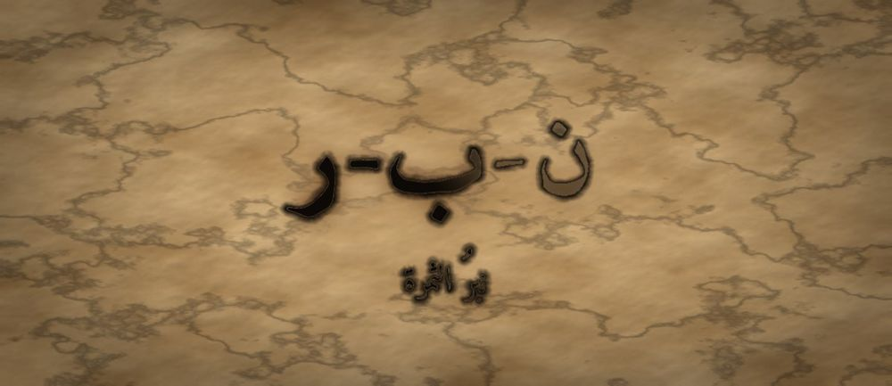

مَطبعةُ جُذور · دبي · MCMXXVI · سِلْسِلَةُ فَنِّ البَيان

مَرحلةُ الثِّمَار · الفئة ١٦–١٨ · الجذر ن-ب-ر · قُسّ بن ساعدة
❦ ✦ ❧
السِّفْرُ ١٧ — نبرُ الثمرة
«أُبْرِزُ الْمَعْنَى بِنَبْرَةٍ — لَا بِصَوْتٍ أَعْلَى»

الرِّسَالَةُ الجَوْهَرِيَّة
النَّبْرُ أَنْ تَضَعَ ثِقَلَ صَوْتِكَ عَلَى الْكَلِمَةِ الَّتِي تَحْمِلُ الْمَعْنَى، فَيَعْرِفَ السَّامِعُ أَيْنَ يَنْظُرُ. الْجُمْلَةُ الْوَاحِدَةُ تَحْمِلُ مَعَانِيَ كَثِيرَةً بِحَسَبِ مَوْضِعِ النَّبْرِ فِيهَا. وَمَنْ يَسْتَوِي كَلَامُهُ كُلُّهُ، لَا يُبْرِزُ شَيْئًا — لِأَنَّ إِبْرَازَ كُلِّ شَيْءٍ إِخْفَاءٌ لِكُلِّ شَيْءٍ.
بِطَاقَةُ هُوِيَّةِ السِّفْر
| المستوى / الدرجة | ثِمَار — ثَمَرَةٌ تَظْهَرُ (الدرجةُ الثانيةُ في مستوى الثمارِ) |
| الفئة العمرية | ١٦–١٨ سنة · نطاقُ تداخلٍ يمتدُّ إلى ١٩ لطالبِ المرحلةِ الجامعيّةِ الأولى |
| الجذر الأساسي | ن – ب – ر · النَّبْرُ: أَنْ تَرْفَعَ مَوْضِعًا مِنَ الْكَلَامِ لِيُرَى |
| أسرة الجذر | نَبْر · نَبَرَ · نَبْرَة · مِنْبَر · اِنْتَبَرَ · مَنْبُور |
| المحطّة | النَّبْرُ — أنْ يصيرَ للصوتِ تضاريسُ تدلُّ السامعَ على موضعِ المعنى |
| المرساة الحسّيّة | الشابُّ يضربُ بأطرافِ أصابعِهِ على المنضدةِ ضربةً أقوى عندَ الكلمةِ المنبورةِ فيسمعُ إيقاعَ جملتِهِ |
| الاستعارة | الثمرةُ لا تُعلِنُ نُضجَها بالصياحِ؛ يتغيّرُ لونُها في موضعٍ واحدٍ فتلتقطُهُ العينُ من بعيدٍ |
| الشخصيتان الحكيمتان | قُسُّ بنُ ساعدةَ الإياديُّ (خطيبُ العربِ في الجاهليّةِ) + الجَدّةُ رملة |
| الشخصية الرمزيّة | نورُ الثمرةِ — بطلةُ السلسلةِ في مرحلةِ الثمارِ |
| الشخصية المضادّة | النَّهْرُ الْمُسْتَوِي — شخصيّةٌ رمزيّةٌ (لا تاريخيّةٌ) تُمثِّلُ الرتابةَ التي لا تُبرِزُ شيئًا، وتتعلّمُ التموُّجَ |
| المهارة (فعل) | أُبْرِزُ — الحلقةُ السابعةَ عشرةَ في القوسِ التراكميِّ للسلسلةِ |
| المرجعُ النظريّ | استرشادًا بـ TRT — نظرية القراءة الملموسة · ومجالُ النضجِ والإقناعِ |
| حدّ اللمس | كلُّ حركةٍ يؤدّيها الشابُّ بنفسِهِ؛ لا تلمسُ يدُ المرافقِ حَلْقَهُ ولا وجهَهُ ولا كتفَهُ لضبطِ النبرةِ |
| ملاحظة القياس | المؤشّراتُ وصفيّةٌ للرصدِ والوصفِ، تُقرأُ نموًّا لا تُستعمَلُ بوّابةً |
صَاحِبُ السِّفْرِ مِنَ التُّرَاث
قُسُّ بنُ ساعدةَ الإياديُّ خطيبٌ عربيٌّ من أشهرِ خطباءِ الجاهليّةِ، تذكرُ كتبُ الأدبِ أنّهُ كان يخطبُ في سوقِ عُكاظَ، وتُنسَبُ إليهِ خُطَبٌ مسجوعةٌ موجزةٌ ضُرِبَ بها المثلُ في البلاغةِ حتى قيلَ: «أَبْلَغُ من قُسٍّ». نستلهمُ منهُ هنا: أنَّ الخطيبَ يُبرِزُ معناهُ بالوقفةِ والنبرةِ وتكرارِ المفصلِ، لا بعلوِّ الصوتِ.
الشَّخْصِيَّةُ المُضَادَّة — النَّهْرُ الْمُسْتَوِي — شخصيّةٌ رمزيّةٌ لا تاريخيّةٌ، يجري بسرعةٍ واحدةٍ وصوتٍ واحدٍ من منبعِهِ إلى مصبِّهِ، ويفخرُ بأنّهُ لا يتغيّرُ أبدًا. لا يُهزَمُ ولا يُشيطَنُ؛ بل يتعلَّمُ في النهايةِ أنْ يضيقَ عندَ الصخرةِ ويتّسعَ بعدَها، فيكتشفُ أنَّ الناسَ صاروا يقفونَ عندَ منعطفِهِ ليُصغوا إلى صوتِهِ.
الجَذْرُ وَأُسْرَتُه
ن-ب-ر — نَبْر · نَبَرَ · نَبْرَة · مِنْبَر · اِنْتَبَرَ · مَنْبُور
الجذرُ (ن-ب-ر) سالمٌ، ومعناهُ المحوريُّ الرفعُ والعلوُّ في موضعٍ بعينِهِ؛ ومنهُ «المِنْبَرُ» لأنّهُ مرتفعٌ، و«نَبَرَ الحرفَ» أي همزَهُ ورفعَ بهِ صوتَهُ. يلاحظُ المعلّمُ أنَّ «نَبْرة» على وزنِ فَعْلة تدلُّ على المرّةِ الواحدةِ من الفعلِ، فالنبرةُ رفعةٌ واحدةٌ في موضعٍ واحدٍ — وفي الوزنِ نفسِهِ درسٌ: النبرُ يفقدُ أثرَهُ إنْ تكرَّرَ في كلِّ كلمةٍ.
القِصَّةُ الكَامِلَة
المشهد ١ — جُمْلَةٌ صَحِيحَةٌ لَمْ يَفْهَمْهَا أَحَدٌ
وَقَفَتْ نُورُ لِتَعْرِضَ فِكْرَتَهَا الَّتِي أَعَدَّتْ لَهَا بِطَاقَاتِهَا الثَّلَاثَ. كَانَتِ الْحُجَّةُ مُحْكَمَةً وَالدَّلِيلُ ظَاهِرًا. لَكِنَّهَا قَالَتْ كَلَامَهَا كُلَّهُ بِنَبْرَةٍ وَاحِدَةٍ مُسْتَوِيَةٍ، كَمَا يُقْرَأُ الْجَدْوَلُ. وَحِينَ انْتَهَتْ، سَأَلَهَا غُصْنٌ: «وَمَا خُلَاصَتُكِ؟» فَدُهِشَتْ نُورُ: «قُلْتُهَا فِي الْجُمْلَةِ الثَّالِثَةِ!» فَقَالَ آخَرُ: «سَمِعْنَاهَا، لَكِنَّهَا مَرَّتْ كَبَاقِي الْكَلَامِ. لَمْ نَعْرِفْ أَنَّهَا الْمُهِمَّةُ.» جَلَسَتْ نُورُ حَائِرَةً: كُلُّ كَلِمَةٍ قَالَتْهَا كَانَتْ صَحِيحَةً، وَمَعَ ذَلِكَ لَمْ يَصِلْ مِنْهَا شَيْءٌ. وَقَالَتْ لِنَفْسِهَا: «أَعْطَيْتُهُمْ كُلَّ شَيْءٍ، فَلَمْ يَعْرِفُوا أَيْنَ يَنْظُرُونَ.» وَتَذَكَّرَتْ كَيْفَ تُنَادِيهَا الْجَدَّةُ رَمْلَةُ بِاسْمِهَا فَتَعْرِفُ مِنْ نَبْرَتِهَا وَحْدَهَا: أَهُوَ نِدَاءُ فَرَحٍ أَمْ نِدَاءُ عِتَابٍ؟ الِاسْمُ وَاحِدٌ، وَالْحُرُوفُ وَاحِدَةٌ، وَالْمَعْنَى يَخْتَلِفُ. فَقَالَتْ: «إِذَنْ فِي الصَّوْتِ لُغَةٌ ثَانِيَةٌ لَا أُتْقِنُهَا بَعْدُ.»
المشهد ٢ — النَّهْرُ الْمُسْتَوِي يَفْخَرُ بِثَبَاتِهِ
مَشَتْ نُورُ إِلَى النَّهْرِ الْمُسْتَوِي تَشْكُو إِلَيْهِ. فَقَالَ لَهَا بِصَوْتٍ لَا يَتَغَيَّرُ: «أَحْسَنْتِ يَا نُورُ! أَنَا مِثْلُكِ: أَجْرِي بِسُرْعَةٍ وَاحِدَةٍ مِنْ أَوَّلِي إِلَى آخِرِي، لَا أَرْتَفِعُ وَلَا أَنْخَفِضُ. الثَّبَاتُ كَمَالٌ، وَالتَّغَيُّرُ ضَعْفٌ.» قَالَتْ نُورُ: «وَهَلْ يَقِفُ عِنْدَكَ أَحَدٌ؟» فَسَكَتَ النَّهْرُ. ثُمَّ قَالَ بَعْدَ حِينٍ: «يَمُرُّونَ... يَمُرُّونَ جَمِيعًا.» وَكَانَ فِي دَاخِلِهِ أَمْرٌ لَا يَقُولُهُ: يَخَافُ أَنْ يَتَمَوَّجَ فَيَبْدُوَ مُضْطَرِبًا، فَاخْتَارَ أَنْ يَكُونَ مَنْسِيًّا وَهَادِئًا عَلَى أَنْ يَكُونَ مَسْمُوعًا وَمُتَغَيِّرًا. فَجَرَّبَتْ نُورُ طَرِيقَتَهُ أُسْبُوعًا، فَكَانَ النَّاسُ يُصْغُونَ بِأَعْيُنِهِمْ وَقُلُوبُهُمْ بَعِيدَةٌ. ثُمَّ أَضَافَ النَّهْرُ: «وَأَنَا لَا أُخْطِئُ أَبَدًا.» فَقَالَتْ نُورُ فِي نَفْسِهَا: «وَلَا تُدْهِشُ أَبَدًا.» وَمَرَّتْ عَلَيْهِ طُيُورٌ فَلَمْ تَنْزِلْ، وَمَرَّ رُعَاةٌ فَلَمْ يَجْلِسُوا، وَبَقِيَ الْمَاءُ صَافِيًا نَظِيفًا لَا يَتَوَقَّفُ عِنْدَهُ أَحَدٌ.
المشهد ٣ — قُسُّ بْنُ سَاعِدَةَ وَالْجَدَّةُ رَمْلَةُ يُعَلِّمَانِ الْمَوْضِعَ
جَاءَ إِلَى الْحَدِيقَةِ شَيْخٌ مِنْ إِيَادٍ اسْمُهُ قُسُّ بْنُ سَاعِدَةَ، خَطِيبٌ كَانَ يَقِفُ فِي سُوقِ عُكَاظَ فَتُنْصِتُ لَهُ الْقَبَائِلُ، وَمَعَهُ الْجَدَّةُ رَمْلَةُ. قَالَ قُسٌّ: «يَا نُورُ، الْكَلَامُ أَرْضٌ؛ فَإِنْ سَوَّيْتِهَا كُلَّهَا لَمْ يَعْرِفِ الْمَاشِي أَيْنَ الطَّرِيقُ. اِرْفَعِي مَوْضِعًا وَاحِدًا لِيَكُونَ عَلَامَةً.» ثُمَّ قَالَتِ الْجَدَّةُ: «خُذِي جُمْلَةً وَاحِدَةً: مَا قُلْتُ لَكِ اذْهَبِي الْيَوْمَ. قُولِيهَا وَاضْرِبِي بِأَصَابِعِكِ ضَرْبَةً أَقْوَى عَلَى الْمَنْضَدَةِ عِنْدَ كَلِمَةٍ وَاحِدَةٍ فِي كُلِّ مَرَّةٍ.» فَقَالَتْهَا نُورُ خَمْسَ مَرَّاتٍ، وَفِي كُلِّ مَرَّةٍ تَنْبِرُ كَلِمَةً غَيْرَ الَّتِي قَبْلَهَا. وَخَرَجَتْ مِنَ الْجُمْلَةِ الْوَاحِدَةِ خَمْسَةُ مَعَانٍ مُخْتَلِفَةٍ — وَالْحُرُوفُ هِيَ هِيَ. وَقَالَ قُسٌّ: «هَكَذَا كُنَّا نَصْنَعُ فِي عُكَاظَ: نُطِيلُ الْكَلَامَ فِي التَّمْهِيدِ، ثُمَّ نَقِفُ وَقْفَةً قَصِيرَةً، فَتَعْلَمُ الْقَبَائِلُ أَنَّ الْجُمْلَةَ الْقَادِمَةَ هِيَ الَّتِي جِئْنَا مِنْ أَجْلِهَا.» فَسَجَّلَتْ نُورُ هَذَا فِي دَفْتَرِهَا وَوَضَعَتْ تَحْتَهُ خَطَّيْنِ.
المشهد ٤ — قَاعِدَةُ الْمَوْضِعِ الْوَاحِدِ
قَالَتْ نُورُ: «إِذَنْ أَنْبِرُ كُلَّ كَلِمَةٍ مُهِمَّةٍ!» فَضَحِكَ قُسٌّ وَقَالَ: «جَرِّبِي.» فَقَالَتْ جُمْلَتَهَا وَهِيَ تَضْرِبُ عَلَى كُلِّ كَلِمَةٍ بِقُوَّةٍ، فَإِذَا الْمَعْنَى قَدْ ضَاعَ كَمَا ضَاعَ أَوَّلَ مَرَّةٍ. فَقَالَ: «إِبْرَازُ كُلِّ شَيْءٍ إِخْفَاءٌ لِكُلِّ شَيْءٍ. اِخْتَارِي فِي كُلِّ جُمْلَةٍ كَلِمَةً وَاحِدَةً، وَفِي كُلِّ فِقْرَةٍ جُمْلَةً وَاحِدَةً.» ثُمَّ زَادَتْهَا الْجَدَّةُ أَدَاتَيْنِ: «وَقْفَةٌ قَصِيرَةٌ قَبْلَ الْكَلِمَةِ تَجْعَلُ السَّامِعَ يَنْتَبِهُ لَهَا قَبْلَ أَنْ تُقَالَ. وَخَفْضُ الصَّوْتِ عِنْدَهَا يَفْعَلُ مَا يَفْعَلُهُ رَفْعُهُ، وَأَحْيَانًا أَكْثَرَ — فَالْهَمْسُ فِي مَوْضِعِهِ يُوقِظُ الْقَاعَةَ كُلَّهَا.» وَجَرَّبَتْ نُورُ الْأَدَاتَيْنِ مَعًا: وَقَفَتْ، ثُمَّ خَفَضَتْ، ثُمَّ نَبَرَتْ كَلِمَةً وَاحِدَةً. فَشَعَرَتْ أَنَّ الْهَوَاءَ فِي الْغُرْفَةِ تَغَيَّرَ. وَقَالَتْ: «لَمْ أَرْفَعْ صَوْتِي وَلَا مَرَّةً، وَمَعَ ذَلِكَ صَارَ كَلَامِي أَوْضَحَ.» فَقَالَتِ الْجَدَّةُ: «لِأَنَّكِ أَعْطَيْتِ الْأُذُنَ عَلَامَةً تَسْتَرِيحُ إِلَيْهَا.»
المشهد ٥ — نُورُ تَعْرِضُ فِكْرَتَهَا مَرَّةً أُخْرَى
عَادَتْ نُورُ إِلَى الْمَجْلِسِ بِالْحُجَّةِ نَفْسِهَا وَالْكَلِمَاتِ نَفْسِهَا. لَمْ تُغَيِّرْ حَرْفًا. لَكِنَّهَا وَقَفَتْ وَقْفَةً قَصِيرَةً قَبْلَ خُلَاصَتِهَا، ثُمَّ خَفَضَتْ صَوْتَهَا قَلِيلًا وَنَبَرَتْ كَلِمَةً وَاحِدَةً: «الْأَرْضُ الَّتِي تَسْتَرِيحُ عَامًا... تُعْطِي أَكْثَرَ.» فَسَكَتَتِ الْحَدِيقَةُ كُلُّهَا. وَقَالَ الْغُصْنُ الَّذِي سَأَلَ فِي الْمَرَّةِ الْأُولَى: «الْآنَ عَرَفْتُ خُلَاصَتَكِ.» قَالَتْ نُورُ: «هِيَ الْخُلَاصَةُ نَفْسُهَا الَّتِي قُلْتُهَا لَكُمْ أَمْسِ.» فَقَالَ: «نَعَمْ، لَكِنَّكِ أَمْسِ أَعْطَيْتِنَا الْكَلَامَ، وَالْيَوْمَ أَعْطَيْتِنَا الْمَوْضِعَ.» ثُمَّ أَضَافَ: «وَقَدْ صَمَتِّ بَعْدَهَا فَلَمْ تُفْسِدِيهَا بِشَرْحٍ.» فَتَذَكَّرَتْ نُورُ صَمْتَ الْأَوْرَاقِ، وَعَرَفَتْ أَنَّ الْوَقْفَةَ الَّتِي تَعَلَّمَتْهَا هُنَاكَ صَارَتْ هُنَا أَدَاةً لِلْإِبْرَازِ لَا لِلْكَفِّ عَنِ الْكَلَامِ فَقَطْ. وَقَالَتِ الْجَدَّةُ رَمْلَةُ: «الْكَلَامُ يَا نُورُ عِمَارَةٌ؛ وَالنَّبْرُ بَابُهَا. فَمَنْ بَنَى بَيْتًا بِلَا بَابٍ، وَقَفَ النَّاسُ حَوْلَهُ وَلَمْ يَدْخُلْهُ أَحَدٌ.»
المشهد ٦ — النَّهْرُ يَتَعَلَّمُ الْمُنْعَطَفَ
كَانَ النَّهْرُ الْمُسْتَوِي يُصْغِي مِنْ بَعِيدٍ. وَحِينَ عَادَتْ نُورُ قَالَ لَهَا بِصَوْتِهِ الَّذِي لَا يَتَغَيَّرُ: «عَلِّمِينِي.» قَالَتْ: «لَا تَتَغَيَّرْ فِي كُلِّ مَكَانٍ؛ تَغَيَّرْ فِي مَكَانٍ وَاحِدٍ.» فَضَاقَ النَّهْرُ قَلِيلًا عِنْدَ صَخْرَةٍ، فَارْتَفَعَ صَوْتُهُ هُنَاكَ وَحْدَهُ، ثُمَّ اتَّسَعَ بَعْدَهَا فَهَدَأَ. وَفِي الْيَوْمِ التَّالِي وَجَدَ النَّاسَ يَجْلِسُونَ عِنْدَ تِلْكَ الصَّخْرَةِ يُصْغُونَ. فَقَالَ فِي دَهْشَةٍ: «كُنْتُ أَظُنُّ أَنَّهُمْ يَمُرُّونَ لِأَنَّ صَوْتِي ضَعِيفٌ... وَكَانُوا يَمُرُّونَ لِأَنَّ صَوْتِي مُسْتَوٍ.» فَقَالَتِ الْجَدَّةُ رَمْلَةُ: «الْمَعْنَى يَا بُنَيَّ لَا يُسْمَعُ فِي الصَّوْتِ، بَلْ فِي اخْتِلَافِهِ.» وَفِي الْمَسَاءِ كَتَبَتْ نُورُ قَاعِدَتَهَا: «فِي كُلِّ جُمْلَةٍ كَلِمَةٌ وَاحِدَةٌ، وَفِي كُلِّ حَدِيثٍ جُمْلَةٌ وَاحِدَةٌ. وَمَنْ رَفَعَ كُلَّ شَيْءٍ فَقَدْ سَوَّى كُلَّ شَيْءٍ.» ثُمَّ نَظَرَتْ إِلَى النَّهْرِ وَهُوَ يَتَمَوَّجُ عِنْدَ صَخْرَتِهِ، وَابْتَسَمَتْ.
النُّسْخَةُ المُخْتَصَرَة
عَرَضَتْ نُورُ حُجَّتَهَا كَامِلَةً صَحِيحَةً، لَكِنْ بِنَبْرَةٍ وَاحِدَةٍ مُسْتَوِيَةٍ. فَسَأَلُوهَا: «وَمَا خُلَاصَتُكِ؟» فَعَرَفَتْ أَنَّ كَلَامَهَا وَصَلَ وَلَمْ يَصِلْ مَعْنَاهُ. نَصَحَهَا النَّهْرُ الْمُسْتَوِي بِالثَّبَاتِ، فَجَرَّبَتْ، فَمَرَّ النَّاسُ وَلَمْ يَقِفُوا. فَعَلَّمَهَا قُسُّ بْنُ سَاعِدَةَ وَالْجَدَّةُ رَمْلَةُ أَنْ تَقُولَ جُمْلَةً وَاحِدَةً خَمْسَ مَرَّاتٍ، تَنْبِرُ فِي كُلِّ مَرَّةٍ كَلِمَةً — فَخَرَجَتْ خَمْسَةُ مَعَانٍ مِنْ حُرُوفٍ وَاحِدَةٍ. وَحَذَّرَاهَا: «إِبْرَازُ كُلِّ شَيْءٍ إِخْفَاءٌ لِكُلِّ شَيْءٍ.» فَعَادَتْ وَوَقَفَتْ وَقْفَةً قَصِيرَةً، وَخَفَضَتْ صَوْتَهَا، وَنَبَرَتْ كَلِمَةً وَاحِدَةً — فَأَنْصَتَتِ الْحَدِيقَةُ. وَتَعَلَّمَ النَّهْرُ أَنْ يَضِيقَ عِنْدَ صَخْرَةٍ وَاحِدَةٍ، فَجَلَسَ النَّاسُ يُصْغُونَ. وَحَذَّرَهَا قُسٌّ مِنْ أَنْ تَنْبِرَ كُلَّ كَلِمَةٍ، فَجَرَّبَتْ فَضَاعَ الْمَعْنَى كَمَا ضَاعَ أَوَّلَ مَرَّةٍ. فَكَتَبَتْ قَاعِدَتَهَا: «فِي كُلِّ جُمْلَةٍ كَلِمَةٌ وَاحِدَةٌ، وَفِي كُلِّ حَدِيثٍ جُمْلَةٌ وَاحِدَةٌ.» وَقَالَتْ: «أُبْرِزُ الْمَعْنَى بِنَبْرَةٍ — لَا بِصَوْتٍ أَعْلَى.» وَتَعَلَّمَ النَّهْرُ الْمُسْتَوِي أَنْ يَضِيقَ عِنْدَ صَخْرَةٍ وَاحِدَةٍ ثُمَّ يَتَّسِعَ، فَصَارَ النَّاسُ يَجْلِسُونَ عِنْدَ مُنْعَطَفِهِ يُصْغُونَ.
المِرْسَاةُ الحِسِّيَّة
يضعُ الشابُّ يدَهُ على حافّةِ المنضدةِ ويقولُ جملتَهُ، فيضربُ بأطرافِ أصابعِهِ ضربةً خفيفةً مع كلِّ كلمةٍ وضربةً أقوى عندَ الكلمةِ التي يريدُ إبرازَها. يشعرُ بفرقِ الضغطِ في أطرافِ أصابعِهِ فيصيرُ النبرُ محسوسًا لا مجرَّدَ فكرةٍ. ثمَّ يجرّبُ العكسَ: وقفةً صامتةً قبلَ الكلمةِ مع خفضِ الصوتِ. لا حبسَ نفَسٍ ولا رفعَ صوتٍ مُجهِدًا في التمرينِ.
العَنَاصِرُ الخَمْسَةُ لِلتَّطْبِيق
| المُخرَجُ اللُّغَويُّ | جملةُ الاختبارِ: «مَا قُلْتُ لَكَ اذْهَبْ الْيَوْمَ» — تُقالُ خمسَ مرّاتٍ بنبرِ كلمةٍ مختلفةٍ في كلِّ مرّةٍ، ويُسمّي الشابُّ المعنى الناتجَ عن كلِّ موضعٍ |
| الحركةُ الجسديّةُ | ضربةٌ بأطرافِ الأصابعِ على المنضدةِ عندَ الكلمةِ المنبورةِ وحدَها؛ يؤدّيها الشابُّ بنفسِهِ فيسمعُ إيقاعَ جملتِهِ ويرى بيدِهِ أنَّ الضرباتِ الكثيرةَ تُلغي بعضَها |
| الدفءُ العلائقيُّ | «لعبةُ الموضعِ»: يقولُ أحدُهما جملةً محايدةً وينبرُ كلمةً، ويُخمِّنُ الآخرُ الكلمةَ المنبورةَ والمعنى المقصودَ؛ بلا نقاطٍ وبلا فائزٍ |
| البديلُ الحسّيُّ | من يصعبُ عليهِ التحكُّمُ في الصوتِ يُبرِزُ بالوقفةِ الصامتةِ وحدَها، أو بتظليلِ الكلمةِ في نصٍّ مكتوبٍ، أو بإشارةِ يدٍ يختارُها |
| الجسرُ الإنجليزيُّ | «I highlight meaning with stress, not with volume.» — تُقالُ في المراجعةِ لتثبيتِ التوازنِ اللُّغَويِّ |
دَلِيلُ الأَهْلِ وَالمُعَلِّم
| قبل الجلسة | اختاروا جملةً واحدةً محايدةً من خمسِ كلماتٍ، واكتبوها على ورقةٍ خمسَ مرّاتٍ، وظلِّلوا في كلِّ سطرٍ كلمةً مختلفةً. التظليلُ قبلَ النطقِ يجعلُ الفكرةَ مرئيّةً قبلَ أنْ تصيرَ مسموعةً. |
| أثناء الجلسة | لا تصحّحوا «جمالَ» النبرةِ ولا تقلّدوها ساخرينَ. اكتفوا بسؤالٍ واحدٍ بعدَ كلِّ محاولةٍ: «ما الكلمةُ التي سمعتُها أنا؟» فإذا اختلفَتْ عمّا قصدَهُ، فتلكَ معلومةٌ ثمينةٌ لا خطأٌ. |
| بعد الجلسة | استمعوا معًا إلى دقيقةٍ من خطبةٍ أو تعليقٍ رياضيٍّ أو قراءةِ نصٍّ، وأحصوا: كم كلمةً نُبِرَتْ في الدقيقةِ؟ وهل كانَ الإبرازُ في موضعِ المعنى أم موزَّعًا بلا قصدٍ؟ الاستماعُ الناقدُ يُثبِّتُ المهارةَ أكثرَ من التدريبِ. |
مُؤَشِّرَاتُ الرَّصْدِ الوَصْفِيَّة
| ما تُلاحِظُه | ماذا يعني |
|---|---|
| يُبرِزُ كلمةً واحدةً في الجملةِ بدلَ رفعِ صوتِهِ كلِّهِ | بدأَ يفصلُ بينَ شدّةِ الصوتِ وموضعِ المعنى — وصفٌ لنموٍّ يُسجَّلُ ولا يُقاسُ بهِ انتقالٌ |
| يستعملُ الوقفةَ الصامتةَ قبلَ خلاصتِهِ | اتّصالٌ واضحٌ بمهارةِ الصمتِ من السفرِ الرابعَ عشرَ، والصمتُ صارَ أداةَ إبرازٍ |
| يُدرِكُ حينَ يسمعُ غيرَهُ أينَ وقعَ النبرُ وما دلَّ عليهِ | المهارةُ صارتْ سمعيّةً تحليليّةً لا أدائيّةً فقط |
| يُقلِّلُ من الإبرازِ حينَ يجدُ نفسَهُ يُبرِزُ كلَّ شيءٍ | وعيٌ ذاتيٌّ بأثرِ التضخُّمِ، وهو أنضجُ مؤشّراتِ هذا السفرِ |
مُفْرَدَاتُ السِّفْر
| الكلمة | المعنى |
|---|---|
| نَبْرٌ | أنْ ترفعَ صوتَكَ في موضعٍ واحدٍ ليُرى المعنى |
| نَبْرَةٌ | الرفعةُ الواحدةُ في الصوتِ عندَ كلمةٍ |
| مِنْبَرٌ | المكانُ المرتفعُ الذي يقفُ عليهِ الخطيبُ |
| وَقْفَةٌ | سكوتٌ قصيرٌ مقصودٌ يُهيّئُ السامعَ |
| إِبْرَازٌ | أنْ تجعلَ المعنى ظاهرًا للسامعِ |
| رَتَابَةٌ | استواءُ الصوتِ كلِّهِ حتى يملَّ السامعُ |
الجِسْرُ الإِنْجْلِيزِيّ
| عربي | English |
|---|---|
| نَبْرٌ | stress / emphasis |
| نَبْرَةٌ | intonation |
| وَقْفَةٌ | pause |
| إِبْرَازٌ | highlighting |
| رَتَابَةٌ | monotony |
| أُبْرِزُ الْمَعْنَى بِنَبْرَةٍ لَا بِصَوْتٍ أَعْلَى | I highlight meaning with stress, not volume |
أَسْئِلَةُ الفَهْم
- لِمَاذَا سَأَلَ الْغُصْنُ نُورَ عَنْ خُلَاصَتِهَا رَغْمَ أَنَّهَا قَالَتْهَا فِعْلًا؟ (تَذَكُّر)
- لِمَاذَا ضَاعَ الْمَعْنَى حِينَ نَبَرَتْ نُورُ كُلَّ كَلِمَةٍ؟ (اِسْتِنْتَاج)
- قُلْ جُمْلَةَ «مَا قُلْتُ لَكَ اذْهَبْ الْيَوْمَ» خَمْسَ مَرَّاتٍ، وَاضْرِبْ بِأَصَابِعِكَ عِنْدَ كَلِمَةٍ مُخْتَلِفَةٍ فِي كُلِّ مَرَّةٍ — كَمْ مَعْنًى خَرَجَ مِنْ حُرُوفٍ وَاحِدَةٍ؟ (سُؤَالٌ حِسِّيٌّ حَرَكِيٌّ)
- مَتَى يَكُونُ خَفْضُ صَوْتِكَ أَقْوَى مِنْ رَفْعِهِ فِي إِبْرَازِ مَا تُرِيدُ؟ (رَبْطٌ شَخْصِيٌّ)
نَشَاطٌ وَوَسَائِط
| نشاطٌ فنّيّ | «تضاريسُ الجملةِ»: يكتبُ الشابُّ جملةً ثمَّ يرسمُ تحتَها خطًّا يرتفعُ عندَ الكلمةِ المنبورةِ وينخفضُ عندَ غيرِها، ويُلوِّنُ الوقفاتِ. ثمَّ يقارنُ رسمَهُ برسمِ الجملةِ نفسِها بمعنًى آخرَ. |
| نشاطٌ تمثيليّ | «الجملةُ الواحدةُ خمسَ مرّاتٍ»: يؤدّي المشاركُ جملةً واحدةً بخمسِ نبراتٍ مختلفةٍ، ويصفُ الحاضرونَ المعنى الذي وصلَهم في كلِّ مرّةٍ. لا تقييمَ للأداءِ ولا مفاضلةَ بينَ المؤدّينَ؛ الوصفُ فقط. |
جِسْرُ الذَّاكِرَة
إلى الوراءِ — السفرُ السادسَ عشرَ («قناعةُ الثمرةِ»): بنيتَ حجّةً من دعوى ودليلٍ ومثالٍ، والنبرُ هو ما يدلُّ السامعَ على موضعِ الحجّةِ فيها. وإلى الوراءِ أبعدَ: صوتُ البذرةِ الذي اكتشفتَهُ صارَ اليومَ ذا تضاريسَ. إلى الأمامِ — السفرُ الثامنَ عشرَ («سياقةُ الثمرةِ»): بعدَ أنْ تُبرِزَ معناكَ، تتعلَّمُ كيفَ تقودُ الكلامَ والناسَ نحوَ غايةٍ مرتَّبةٍ، فالنبرُ إشارةٌ في الطريقِ والسياقةُ هي الطريقُ كلُّهُ.
قَائِمَةُ التَّحَقُّق
- الجذرُ (ن-ب-ر) صحيحٌ صرفيًّا، ودلالةُ وزنِ «فَعْلة» على المرّةِ الواحدةِ في «نَبْرة» معروضةٌ بدقّةٍ.
- الهامشُ التعريفيُّ بقُسِّ بنِ ساعدةَ صحيحٌ تاريخيًّا ومحتاطٌ في النسبةِ، والنهرُ المستوي موسومٌ كرمزيٍّ لا تاريخيٍّ.
- الشخصيّةُ المضادّةُ تتعلَّمُ التموُّجَ ولا تُهزَمُ، والبطلةُ نور متّصلةٌ بالأسفارِ السابقةِ.
- بروتوكولُ الصوتِ محفوظٌ: لا إجهادَ ولا صراخَ، ولا حبسَ نفَسٍ، مع استثناءٍ صحّيٍّ صريحٍ للربوِ والقلبِ والتنفُّسِ.
- حدُّ اللمسِ محفوظٌ: لا تلمسُ يدُ المرافقِ حَلْقَ الشابِّ ولا فكَّهُ، وكلُّ حركةٍ يؤدّيها بنفسِهِ.
- المؤشّراتُ وصفيّةٌ للرصدِ لا بوّاباتٍ، والنَّظَريّةُ مذكورةٌ استرشادًا بـ TRT — نظرية القراءة الملموسة، بلا أيِّ ادّعاءِ اعتمادٍ.

مَطبعةُ جُذور · دبي · MCMXXVI · صمّمه وطوّره د. عادل ف. عامر
Designed and developed by Dr. Adel F. Amer · Amer (2024) · CC BY-NC-SA 4.0
↤ عودةٌ إلى خِزانةِ الأسفار